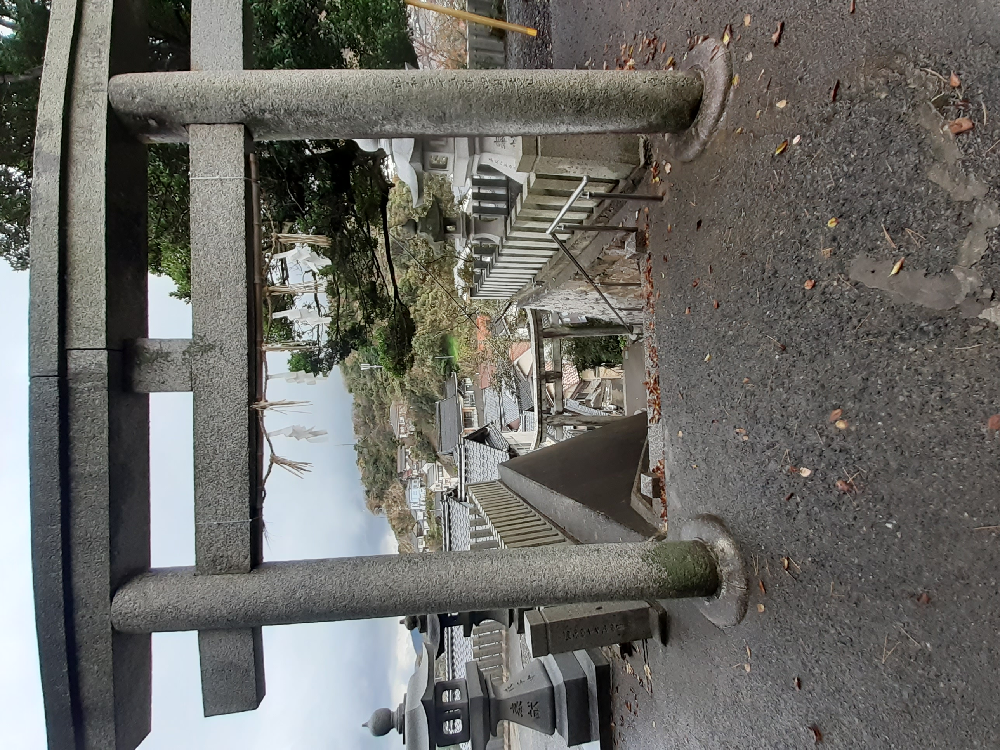
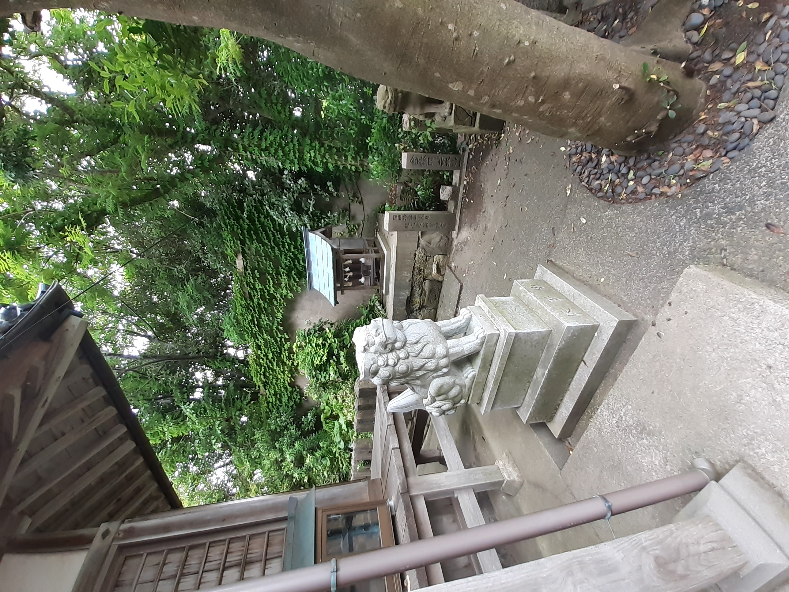
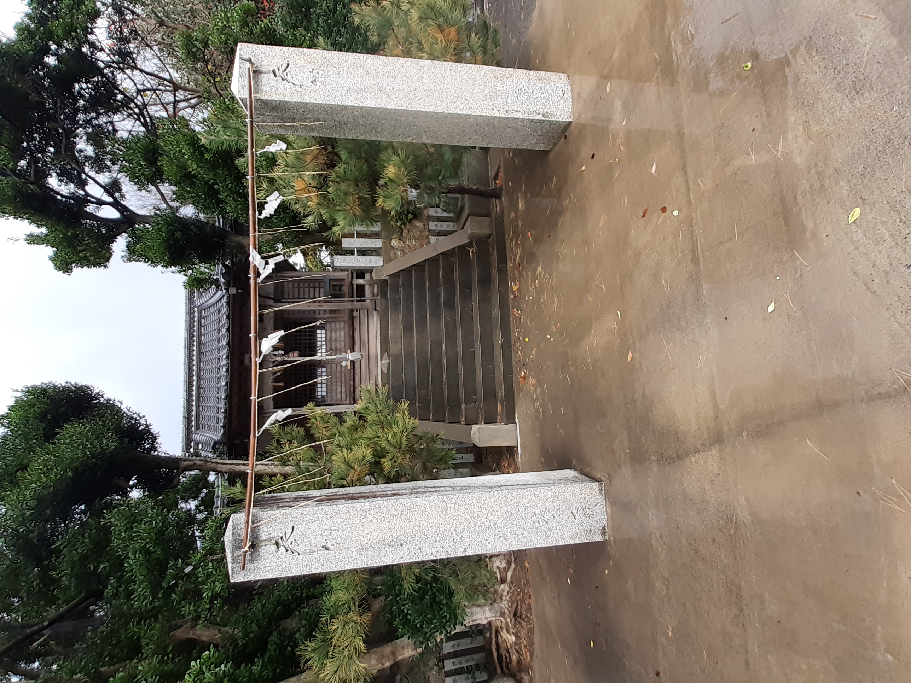

This lovely shrine can be found near the Tajiri harbor in Iwami.
A stair leads to the main shrine.
From the shrine, you can walk to
a viewing spot with a great view over the sea and the much smaller Minato shrine.